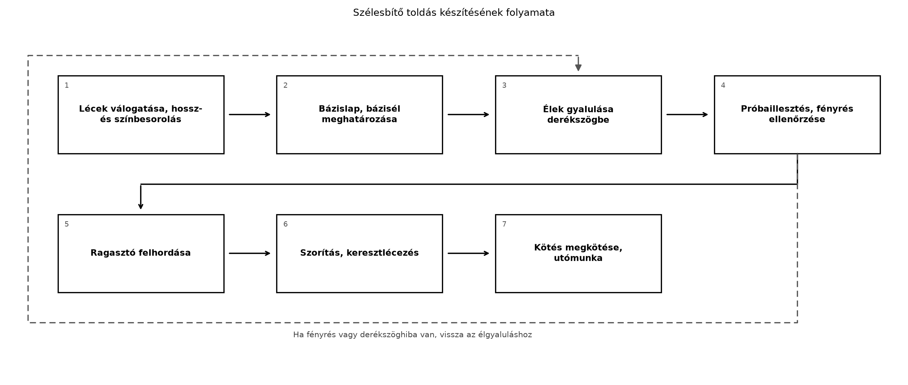

Egy megrendelő 1 000 × 600 mm-es tömörfa asztallapot kér. A raktárban nincs 600 mm széles deszka, viszont van öt darab 130 mm széles, 22 mm vastag tölgy léc. Ha az asztalos ezeket szakszerűen szélesbítő toldással egy táblává ragasztja, a lap esztétikus és mérettartó lesz. Ha viszont rosszul válogatja a léceket, vagy hagyja, hogy az illesztési hézag fényes réseket mutasson, a kész lap heteken belül hullámos lehet, a ragasztási vonal mentén megnyílhat, és a vevő reklamálni fog.
A szélesbítő toldás készítése egy logikus, lépésről lépésre ellenőrizhető folyamat. Az alábbi ábra ezt a folyamatot foglalja össze:

Az évgyűrű-fordítást a következő ábra mutatja öt, 130 × 22 mm-es léc homloknézetén. Zsugorodáskor minden léc a bél felőli oldalán domborodik, a kéreg felőli oldalán homorodik; a merev ragasztási vonalak miatt a szomszédos lécek ívelése összeadódik. Azonos évgyűrűállásnál (a) a tábla egy nagy vályúvá ível, váltakozó állásnál (b) a görbületek kioltják egymást.
Definíció. A szélesbítő toldás (gyakori műhelyi szóval táblásítás/laptoldás) olyan él menti ragasztott vagy csapos toldás, amely keskeny léceket keskeny élükön összeillesztve egy széles, táblásított alkatrészt hoz létre. A toldás iránya merőleges a rostirányra, tehát a fa mozgása a szélesség mentén jelentkezik.
Szabály. A táblásításhoz a lécek nedvességtartalmának közeli értéket kell elérnie. Beltéri bútorhoz a táblásítás előtti fanedvesség általában 8–12% közötti, és a lécek közötti eltérés legfeljebb 1–2 százalékpont legyen (tájékoztató érték, a helyszíntől és az anyagtól függ – ellenőrizendő). Ha a lécek eltérően száradnak, a kész tábla vetemedik, vagy a ragasztási hézag megfeszül.
Definíció. A fényrés a próbaillesztésnél a két él közötti hézag; ha a hézagot megvilágítjuk, a résen átlátszó fény jelzi, hogy az élek nem zárnak tökéletesen. A szakszerűen gyalult élnek teljes hosszon össze kell zárnia, vagy legfeljebb hajszálvékony, egyenletes rést mutathat.
Továbbvitt eredmény. A szélesbítő toldás a táblásítás alapművelete. Ezt a technológiát használjuk a Hosszabbító toldások készítése során, azután asztallapok, falépcsők, lépcsőfokok és táblásított padlóelemek készítésénél a Falépcsők szerkesztése és készítése és a Padlók, parketták és lambéria: alapanyaggyártás és lerakás alfejezetekben.
A tábla minősége a másolás előtt dől el. A válogatás során egyszerre kell nézni a rajzolatot, a színt, az évgyűrűállást, a nedvességet és a fahibák kizárását.
A lécek színét és rajzolatát úgy válogassuk, hogy a táblán nyugodt, folyamatos felület legyen. A nagyon sötét, húros rajzú lécet ne tegyük világos, finoman erezett léc mellé, ha a felület pácolva is megmutatkozó színe számít. Mindig jelöljük meg a jó oldalt: a tábla nézőfelületére az ép, hibamentes, szebb oldal kerüljön.
Az évgyűrű-fordítás célja, hogy a lécek várható ívelése ne halmozódjon. Száradáskor a húrmetszetű léc a kéreg felőli (az évgyűrűív domború) oldalán homorodik: az évgyűrűk mintegy kiegyenesedni igyekeznek. Ezért a szomszédos lécek évgyűrűit váltakozó irányba fektetjük: az egyik léc kéreg felőli oldala felfelé, a következőé lefelé nézzen. Így a tábla inkább enyhén hullámos marad, de nem válik csatorna alakúvá. A gyakorlatban a lécek homlokfelületét és a toldandó él felőli évgyűrűíveket nézzük; a váltakozó megfordítást ceruzával jelöljük.
Hiba. Ha minden léc évgyűrűje azonos irányban nyílik, a nagy húrirányú zsugorodású tábla ívelt, csónak alakúan vályús lesz. A vevő szerelt asztalánál ez felnyíló illesztésként vagy a lap közepének emelkedéseként látszik.
A táblásítás előtt egységes jelölést használunk. Minden lécen rajzoljuk meg: - a jó oldal jelet, - a bázisél jelet (amelyhez a többi élt illesztjük), - a toldási sorrend számait (1., 2., 3. …), hogy ne keveredjenek. A bázisél jelölése történhet vékony ceruzavonallal vagy zsírkrétával. A jelölés a Mérő- és rajzolóeszközök, anyagkiosztás és előrajzolás alfejezetben tanult kézjegyrendszert követi: minden alkatrésznek egyértelműen azonosíthatónak kell lennie a ragasztópadon.
A táblásítás kulcsművelete az élgyalulás, amely két dolgot biztosít: 1. az él minden ponton találkozzon a szomszéd éllel, 2. az él derékszöget zárjon be a bázislappal.
Kézi élgyalulás. A keskeny él gyalulásához hosszú talpú eresztőgyalut használunk; a vágásmélységet nagyolásnál kb. 0,3 mm-re, simításnál kb. 0,1 mm-re állítjuk. Az élt először durván egyengetjük, majd simítógyaluval finomítjuk. A gyalulás közben a gyalu talpát ne billentsük; a bázislapot folyamatosan ellenőrizzük derékszöggel.
A páros élgyalulás nagyon hasznos: az egymáshoz tartozó két élt egymásra hajtjuk (a jó oldalak kívülre néznek), majd a két élt egyszerre gyaluljuk. Ekkor a két élen keletkező szög összege 180°, még akkor is, ha az él nem pontosan 90° a lapra. Így a toldási hézag akkor is zár, ha a gyalulás enyhén ferde. A páros gyalulás után a léceket megszámozzuk, hogy a következő műveletben ne forduljon fel az illesztés.
Gépi élgyalulás. A műhelyben az élek gyalulását a Egyengető gyalugép: késtengely, késcsere, beállítás, biztonság végzi; a Vastagsági gyalugép és a teljes keresztmetszeti megmunkálás a lécek egyenletes vastagságát adja, élgyalulásra nem használjuk. Fontos, hogy a gépi gyalulás előtt a bázislap meglegyen. Az élgyalulás során a lécet stabilan, de nem túl erősen a lapjához szorítjuk, és a vetemedésmentes lapot vezetjük végig. A gépi beállításnál a késtengelyet, a védőburkolatot és az elszívást a gépkönyv szerint ellenőrizzük.
A ragasztás előtt minden élt szárazon egymáshoz illesztünk. Az illesztést fényforrás felé tartva vagy asztallap alól megvilágítva nézzük: a fényrés helye megmutatja a magas pontokat, ahol a gyalu többet vett le, vagy a derékszöghibát. A jól gyalult él teljes hosszon zár; a hajszálvékony, egyenletes fényrés elfogadható, mert a ragasztás és a szorítás után megszűnik. A 0,2 mm-nél nagyobb, vagy a szélek felé nyíló rést javítani kell (tájékoztató tűrés, a termék minőségi osztálya határozza meg).
Tilos. A fényrés megszüntetésére a léceket soha ne hajlítsuk túlzott erővel, mert a ragasztás megkötése után a feszültség visszatér, és a tábla elrepedhet vagy görbülhet.
A szélesbítő toldásoknál szinte mindig PVAc (polivinil-acetát) ragasztót használunk, amelyet a nedvesség-igénybevétel szerint D2, D3 vagy D4 vízállósági osztályban választunk (MSZ EN 204 – ellenőrizendő). Beltéri bútorlaphoz D2 vagy D3 elegendő, konyhai vagy kültéri igénybevételhez D3 vagy D4 szükséges.
Definíció. A keresztléc a szorítás alatt a tábla élére vagy lapjára helyezett, merev, egyenes fa- vagy alumíniumprofil. Feladata, hogy a szorítók nyomását elossza, a léceket egy síkban tartsa, és megakadályozza, hogy a tábla préselés közben hullámossá váljon.
A ragasztás receptje – számozott lépések. 1. Készítsük elő a munkaterületet: tiszta, sík ragasztópad, szorítók, mérőeszközök, ragasztó, tisztítókendő. 2. Próbáljuk ki a léceket szárazon, és jelöljük a szorítók helyét. 3. Kenjük fel a ragasztót egyenletesen, vékony rétegben a toldandó élekre; mindkét élet vonjuk be, hogy a szorítás után ne maradjon száraz rész. 4. Azonnal fektessük egymáshoz a léceket, és kézzel igazítsuk az illesztéseket. 5. Helyezzük el a szorítókat a táblázat szerint, rakjuk alá és fölé a keresztléceket. 6. Húzzuk meg a szorítókat fokozatosan, váltakozva, hogy a tábla ne csússzon el, és a fölös ragasztó egyenletesen kinyomódjon. 7. Ellenőrizzük síklappal és derékszöggel a tábla lapját, és szükség esetén igazítsuk a szorítókat. 8. Töröljük le a friss, kinyomódott ragasztót nedves ronggyal; a megszáradt ragasztó a csiszolást nehezíti, és a felület a pácban foltos lesz. 9. Tartsuk préselésben a gyártó által megadott ideig (általában 30–60 perc, tájékoztató érték); a teljes terhelhetőségig 12–24 órát várjunk. 10. Préselés után pihentessük a táblát függőlegesen vagy lécezett alátéten, hogy a nedvesség kiegyenlítődjön.
Szorítók elhelyezése. A szorítók távolsága a tábla hossza mentén általában 300–500 mm, a szélektől 100–150 mm. A szorítókat váltakozva helyezzük el: ha az egyik alul, a következő felül szorít, így a tábla kevésbé hajlik. A szorítók alá és fölé mindig tegyünk keményfa- vagy alumíniumkeresztlécet.
Számítás 1. – Szorítók darabszáma. Egy tábla hossza , a tervezett szorítótávolság . A szükséges szorítók száma:
Ellenőrzés. Egy 1200 mm hosszú táblán öt szorító azt jelenti, hogy a szélső szorítók kb. 120–150 mm-re vannak a szélektől, a négy közbenső osztás így összesen 900–960 mm, azaz 225–240 mm-enként van szorító, tehát sűrűbben, mint a tervezett 350 mm; ez biztonságos. ∎
Számítás 2. – Ragasztóigény. Adott: öt lécből táblásított alkatrész, hossza , vastagsága . Az illesztések száma: . A ragasztandó élfelület minden illesztésnél .
A ragasztandó felület:
Fajlagos felhordás: (tájékoztató, a ragasztógyártó adata – ellenőrizendő); az illesztési felületre (egy ragasztási vonalra) vonatkozik. Ha a gyártó a bekent felületre adja meg, és mindkét élt kenjük, kétszeres, és . A szükséges ragasztó:
Ellenőrzés. A számított 10,8 g nagyon kis mennyiség; ez reális, mert a ragasztót vékony rétegben hordjuk fel, és a tábla élei tényleg kis felületet adnak. A gyakorlatban a veszteség miatt 1,5–2-szeres mennyiséget készítünk elő. ∎
Ha a szélesbítő toldást illesztés ellen pozicionálni kell, vagy a toldás várhatóan nagy húzó- és hajlítóigénybevételt kap, idegen csapot alkalmazunk. Az idegen csap lehet tipli (köldökcsap), lamelló (laposcsap) vagy léc.
Az idegen csapos szélesbítő toldás lépései: 1. A léceket előkészítjük ugyanúgy, mint az egyenes élillesztésnél. 2. Az éleket szárazon összeillesztjük, és a toldási vonalra merőlegesen közös jelölést húzunk; ez lesz a tiplik vagy lamellók helye. 3. Tipli esetén megfúrjuk a szemben lévő furatokat tiplifúróval. A furat mélysége a tipli hosszának fele plusz 1–2 mm, hogy a ragasztófelesleg helyet kapjon (tájékoztató érték). A furatok tengelye párhuzamos legyen a lap síkjával. 4. Lamelló esetén lamellózó géppel hornyot marnak; a horony mélységét a gép a lamelló méretjelének (0, 10, 20) megfelelő ütközőn állítja be: kb. a lamelló szélességének fele + 1 mm (ellenőrizendő: gépkönyv). A horony hossza a lamellónál kissé hosszabb, így a lécek hosszirányban még igazíthatók. A lamelló a ragasztó nedvességétől duzzad, ezért a horonyban szorosan tart. 5. A ragasztót az élekre és a csapra is felhordjuk, majd összeillesztjük és szorítjuk. 6. A csapos toldásnál a szorítókat a csap közelében, de nem a csupasz csapra, hanem a teljes élre, egyenletesen helyezzük.
Figyelem. A tiplik és lamellók megduzzadnak a ragasztótól, ezért a furat vagy horony ne legyen túl szoros, de túl laza sem; a gyártó ajánlása a mérvadó (ellenőrizendő: gyártói adat).
A gépi profiltoldás azt jelenti, hogy a szélesbítő toldás élét nem simára, hanem profilra munkálják, hogy a ragasztási felület nagyobb legyen, és a lécek egymásba illeszkedjenek. A leggyakoribb profilos él például a horony–csap (nút–féder) vagy az ékfogas élprofil, amelyet alsómarón vagy táblásító gépen készítenek. A gépi profiltoldás pontos szerszámbeállításait és a profilos élmarást a Asztalos marógép (alsómaró): profilmarás, díszlécek, sablon szerinti marás tárgyalja. A kézi és egyszerű élillesztés mellett ez a módszer elsősorban sorozatgyártáshoz való, ahol nagy a darabszám és a szoros illesztés fontos.
Termék. 900 × 500 mm-es, 20 mm vastag tölgy táblásított alkatrész, 4 db 130 mm széles lécből, egyenes élillesztéssel.
Anyagok. Tölgy lécek (nedvesség 10%, ellenőrizendő), D3 PVAc ragasztó (ellenőrizendő: gyártói adatlap), tiszta vizes rongy, alátétlécek.
Szerszámok és gépek. Eresztőgyalu, simítógyalu, derékszög, mérőszalag, ceruza, szorítók, keresztlécek, ragasztóterítő (ecset vagy fűrészfogas simító), síklap, fényforrás. Gépi élgyalulás esetén: egyengető gyalu, vastagsági gyalu.
Gépbiztonság. A gépi műveletet betanított, felügyelt tanuló végezheti. Védőberendezés nélkül, egyedül, fáradtan ne dolgozzon. Egyengető gyalun: a késtengely védőburkolata, az elszívás, a munkadarab-vezető, és a 760 mm-nél rövidebb darabra a gyártó által előírt előtoló tolófa/tolólap (ellenőrizendő: gépkönyv). Egyéni védőeszköz: fűrészpor ellen légzésvédő (FFP, jelölve), védőszemüveg, munkaruha, hallásvédelem, ha szükséges. A gép indítás előtti ellenőrzése: a kések épek és megfelelően rögzítettek, a védőburkolat a helyén van, az elszívás be van kapcsolva, a munkadarab hibamentes (nincs szeg, laza göcs, repedés), a munkaterület szabad, a vészleállító elérhető.
Lépések. 1. Válogasd ki a négy lécet, és jelöld meg a jó oldalt és a báziséleket. – Ellenőrzés: az azonos vastagságú, hibamentes lécek évgyűrűi váltakozó irányban állnak. 2. Méretre vágás előtt hagyj rá kb. 5–10 mm-t hosszban és szélességben. – Ellenőrzés: méretezés a szabásjegyzék szerint. 3. Gyaluld a lécek lapját síkba, majd az éleket derékszögbe. – Ellenőrzés: a bázislap sík, az él derékszögben van, derékszöggel 0,2 mm-en belül. 4. Végezz páros élgyalulást az összetartozó éleken. – Ellenőrzés: a két él együttesen zár, a fényrés egyenletes. 5. Illeszd szárazon a léceket, és nézd a fényrést. – Ellenőrzés: nincs 0,2 mm-nél nagyobb, szélek felé nyíló rés (tájékoztató tűrés). 6. Kend fel a ragasztót mindkét élre. – Ellenőrzés: a ragasztófelesleg a szorítás után egyenletesen kinyomódik. 7. Fektesd össze a léceket, helyezd el a szorítókat és a keresztléceket. – Ellenőrzés: a szorítók távolsága 300–400 mm, a szélektől 120–150 mm. 8. Húzd meg a szorítókat fokozatosan, váltakozva. – Ellenőrzés: a tábla sík, derékszöge és az élek érintkezése megfelelő. 9. Töröld le a kinyomódott ragasztót, és hagyd a gyártó szerinti ideig préselésben. – Ellenőrzés: a tábla nem csúszott el, a ragasztófröcskölés nem száradt a felületre. 10. Préselés után tompítsd le a ragasztási sorját, és méretre vágd a táblát. – Ellenőrzés: a szélesség és hossz a rajz szerint, a ragasztási hézag nem látszik. 11. Dokumentáld a műveletet a munkanaplóban. – Ellenőrzés: a nedvesség, a ragasztó típusa, a szorítási idő és az ellenőrzési eredmények fel vannak jegyezve.
A kész táblásított alkatrészt az alábbi szempontok szerint ellenőrizzük: - Síklapúság: acélvonalzóval vagy síklappal, hossz- és átlós irányban. A tájékoztató tűrés 0,2–0,3 mm/300 mm (ellenőrizendő: a termék műszaki előírása). - Derékszög: a lap és az él zárjon derékszöget; derékszöggel ellenőrizve a fényrés legfeljebb 0,2 mm/100 mm. - Ragasztási hézag: a hézag ne legyen látható, a kötés ne nyíljon el egyenletesen. - Szín- és rajzolatillesztés: a toldási vonal környékén ne legyen erős színugrás, hacsak a terv nem kér kontrasztot. - Mérettartás: a tábla szélessége és hossza a szabási ráhagyás eltávolítása után feleljen meg a rajznak. Eltérésnél a hibás részt újra illesztjük, vagy a táblát újra gyaluljuk, ha a hibák még a ragasztás előtt vannak.
1. Hiba: a tábla ragasztás után ívelt lesz. Ok: az évgyűrű-fordítás elmaradt, vagy az összes léc azonos irányban mozog. Javítás: a táblát nem lehet visszaformálni; a következő darabnál váltakozó évgyűrűállást alkalmazzunk.
2. Hiba: a ragasztási vonal mentén megnyílik a tábla. Ok: túl alacsony szorítónyomás, nem megfelelő páros élgyalulás, túl hosszú nyitott idő, hideg ragasztó. Javítás: az éleket újra gyaluljuk, és melegebb műhelyben gyorsabban dolgozunk.
3. Hiba: a tábla hullámos. Ok: a szorítók túl nagy távolságra, vagy a keresztlécek hiányoztak. Javítás: a táblát újra vastagsági gyalulgatni kell, de a következőnél sűrűbb szorítást és keresztléceket alkalmazzunk.
4. Hiba: a ragasztófoltok nem távolíthatók el, és a pác foltos lesz. Ok: a kinyomódott ragasztót nem törölték le időben, és az beszívódott a fába. Javítás: halványítás, csiszolás; a következőnél nedves ronggyal azonnal töröljünk.
Tünet. Egy kész tömörfa dohányzóasztal-lap két hét után a hosszanti szélei mentén felívelt, a ragasztási vonalak a felső oldalon hajszálvékonyan szétnyíltak.
Lehetséges okok. (1) A lécek nedvességtartalma a táblásításkor túl magas volt. (2) Az évgyűrű-fordítás elmaradt. (3) A táblát a vevő a fűtött szobában közvetlenül a fűtőtest fölé helyezte, és a fa gyorsan száradt.
Vizsgálat. Az asztalos megnézte a tábla homlokfelületét: az évgyűrűk minden lécen azonos irányban nyíltak, és a táblásításkor a lécek nedvessége 16% volt. A tünetek az ívelésre utaltak.
Valódi ok. A léceket nem szárították vissza a fűtött belső térhez szükséges 8–10% közé, és az évgyűrű-fordítás is elmaradt. A fűtött helyiségben a fa tovább száradt, a húrirányú zsugorodás felnagyította az élek közötti ívelést.
Javítás. A kész lapot nem lehet teljesen visszaalakítani; a hiba miatt új lapot kellett készíteni. A régi lapból kisebb, nem szerelt, szabadon fekvő elem készülhetett.
Megelőzés. Minden táblásításhoz mérjük a fanedvességet, és csak a beépítési környezetnek megfelelő nedvességtartalmú anyaggal dolgozzunk. Az évgyűrű-fordítást a műhelyben fényképpel vagy jelöléssel dokumentáljuk.
1. feladat (A). Fogalmazd meg, mi a különbség az egyenes élillesztés és az idegen csapos szélesbítő toldás között.
2. feladat (A). Számítsd ki a szorítók darabszámát táblahosszhoz, ha a szorítótávolság .
3. feladat (B). Egy táblát 6 lécből készítünk, hossza 1 200 mm, vastagsága 18 mm. A ragasztó fajlagos felhordása 140 g/m². Számítsd ki a szükséges ragasztómennyiséget.
4. feladat (B). Egy ragasztási vonal megnyílt a táblán, és a hiba a léc közepén látszik. Melyik műveleti hiba a legvalószínűbb, és hogyan javítanád?
5. feladat (C). Tervezzük meg egy 700 mm széles, 20 mm vastag bükk tábla táblásítását. A raktárban 80, 100, 120 és 150 mm széles lécek vannak. Válassz lécszélességet, indokold az évgyűrű-fordítást, és készíts lépéssort a ragasztáshoz.
6. feladat (D). A műhelyben a száraz próbaillesztésnél a tábla közepén 0,5 mm-es fényrés van, a széleken zár. Mit ellenőriznél, és milyen javítást végeznél a technológiai lap alapján?
1. feladat. Az egyenes élillesztésnél a toldott élek simák, ragasztóval zárulnak. Az idegen csapos toldásnál a toldási vonalra merőlegesen tiplik, lamellók vagy lécek biztosítanak pozicionálást és nagyobb ragasztási felületet. Az idegen csapot akkor használjuk, ha a táblát váltakozó terhelés éri, vagy az illesztést pontosan rögzíteni kell.
2. feladat. db. Ellenőrzés: a szélső szorítók a szélektől 100–150 mm-re, a belsők középen oszlanak el, ez megfelelő.
3. feladat. Illesztések száma: . A ragasztandó élfelület: . A ragasztó: . Ha a a bekent felületre vonatkozik és mindkét élt kenjük, . Ellenőrzés: nagyságrendileg 15 g, ami a gyakorlatban a veszteséggel 20–25 g előkészítést jelent.
4. feladat. A legvalószínűbb, hogy a páros élgyalulásnál a léc közepén magas pont maradt, vagy a szorítás nem volt egyenletes, és a ragasztó nem tudta a feszültséget kompenzálni. Javítás: a táblát nem lehet visszafeszíteni; a hibás lécet ki kell vágni vagy a táblát újra felvágni, és az éleket újra gyalulva újra ragasztani. Megelőzés: fényréssel ellenőrizzük a középső szakaszt is.
5. feladat. Válasszunk négy-öt azonos szélességű lécet, hogy a ragasztási vonalak egyenletesen oszoljanak. Például 5 db 140 mm-es léccel 700 mm jön ki, de a raktárban 150 mm van; akkor 5 db 150 mm-t választunk, és a táblát 750 mm-re tervezzük, vagy a szélső léceket 130 mm-re gyaluljuk. Az évgyűrű-fordítást úgy végezzük, hogy a szomszédos lécek homorú oldala váltakozva felfelé és lefelé nézzen. A lépéssor megegyezik a technológiai lap lépéseivel: válogatás, bázislap/bázisél, élgyalulás, próbaillesztés, ragasztás, szorítás keresztlécekkel, utómunka.
6. feladat. Elsőként ellenőrizd az illesztett éleket fényréssel, majd a páros gyalulás elvét: a két él együttesen zár-e? Ha a középső fényrés nagy, a gyalu valószínűleg középen vett le több anyagot, vagy a léc középen magas. Javítás: jelöld meg a magas pontot, gyaluld újra az élt, és végezz újra próbaillesztést. A ragasztást csak akkor kezdd, ha a fényrés a teljes hosszon hajszálvékony vagy megszűnt.
A szélesbítő toldás keskeny lécekből széles táblát hoz létre élillesztéssel, idegen csappal vagy gépi profillal. A munka a válogatással kezdődik: a lécek színe, rajzolata, hibamentessége és nedvességtartalma egységes legyen, és az évgyűrű-fordítást váltakozva alkalmazzuk, hogy a fa mozgása ne halmozódjon. A jelölés egyértelműen rögzíti a jó oldalt, a báziséleket és a sorrendet. Az élgyalulás kézzel eresztőgyaluval, géppel egyengető- és vastagsági gyalun történik; a páros élgyalulás a kis ferdeséget kiegyenlíti. A próbaillesztés fényréssel ellenőrzi a hézagot. A ragasztás D2–D4 PVAc ragasztóval, egyenletes vékony felhordással, keresztlécekkel, fokozatos szorítással és a felesleg azonnali letörlésével történik. A szorítók távolsága 300–500 mm, a ragasztóigény az élfelület és a fajlagos felhordás szorzata. Továbbvitt eredmény: a táblásítás az asztallapok, lépcsőfokok és táblásított padlóelemek alapja, felhasználja a Hosszabbító toldások készítése, a Falépcsők szerkesztése és készítése és a Padlók, parketták és lambéria: alapanyaggyártás és lerakás.